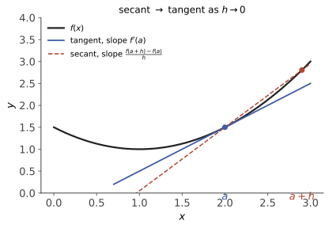
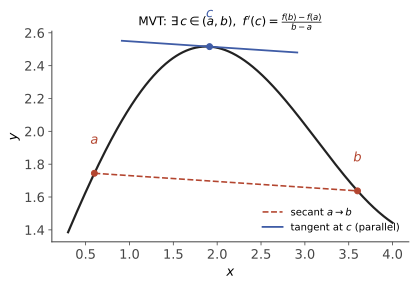

本页目录
数分 II · 一元微分学
主线一句话：导数是局部线性近似的斜率；中值定理链把"导数的局部信息"转化为"函数的整体性质"；Taylor 公式把线性近似升级为多项式近似。本页的主梁是 Fermat → Rolle → Lagrange → Cauchy 这条链，几乎所有应用（单调性、极值、凸性、洛必达）都挂在它上面。
学习层：切线到底承诺了多少精度？
1. 先把导数看成一个可审计的局部模型
在点 \(a\) 附近，导数不是“把曲线画直”的装饰，而是线性主部
若 \(f\) 在邻域内二阶可导且 \(|f''|\) 有界，Taylor--Lagrange 余项进一步给出
前一条是函数值的线性化误差，后一条是割线斜率对导数的误差；不要把“差商趋于导数”误读成任意有限 \(h\) 已经等于导数。
2. 三项预测：先写下阶数与边界
- 当 \(f''\) 在 \(a\) 附近有界时，割线斜率与 \(f'(a)\) 的误差是 \(O(|h|)\) 还是 \(O(h^2)\)？
- 同一条件下，\(f(a+h)\) 与切线 \(L_a(a+h)\) 的误差是 \(O(|h|)\) 还是 \(O(h^2)\)？
- 对 \(|x|\) 在 \(0\) 与 \(x^2\) 在 \(0\)，能否不加条件地使用“导数”和“反函数导数为 \(1/f'\)”的口诀？
交互实验固定 \(f(x)=x^2\)、\(x^3\) 的光滑模型，再把 \(|x|\) 的尖角与 \(x^2\) 的零导数反例放进同一本账。先作答，才会揭示曲线、切线、割线和 \(h\) 减半时的观测阶。
3. 静态 fallback：默认模型的两本误差账
当 \(f(x)=x^2\)、\(a=1\) 时，\(f'(1)=2\)、\(L_1(1+h)=1+2h\)，并且
因此 \(h=0.1,0.05,0.025\) 时，割线误差分别为 \(0.1,0.05,0.025\)，线性化误差分别为 \(0.01,0.0025,0.000625\)。误差比在 \(h\) 减半时分别约为 \(1/2\) 与 \(1/4\)，这是当前解析模型的有限账本，不是对任意函数的无条件阶数证明。
无 JavaScript 时的静态读法：表中“割线误差”比较差商与真实导数；“线性化误差”比较函数值与切线；\(|x|\) 的导数栏应写“不存在”，\(x^2\) 在 \(0\) 的反函数差商则随 \(y\downarrow0\) 像 \(1/\sqrt y\) 发散。脚本揭示后可切换模型和步长，但每一行仍只对应所选解析模型。
| 模型 | \(f'(a)\) | \(h=0.1\) 的割线读数 | \(h=0.1\) 的线性化误差 | 边界 |
|---|---|---|---|---|
| \(x^2\) at \(a=1\) | \(2\) | \(2.1\)，误差 \(0.1\) | \(0.01\) | 一阶 / 二阶缩放 |
| \(x^3\) at \(a=1\) | \(3\) | \(3.31\)，误差 \(0.31\) | \(0.031\) | 仍需 \(C^2\) 邻域控制 |
| \(\lvert x\rvert\) at \(a=0\) | 不存在 | 左 \(-1\)、右 \(+1\) | 无单一切线 | 不可导，不能补一个导数 |
| \(x^2\) at \(a=0\) | \(0\) | \(0.1\)，误差 \(0.1\) | \(0.01\) | 取 \(y=h^2\) 时，反函数差商 \(1/\sqrt y=1/\lvert h\rvert\) 发散 |
4. 定理假设与失效边界
- 均值定理/Taylor 的条件：上述误差阶需要在包含 \(a\) 与 \(a+h\) 的邻域内有相应的连续性、可导性或二阶导数有界；单个网格上看到斜率并不提供这些条件。
- 尖角不是“数值噪声”：\(|x|\) 的左右导数不相等，任何有限差分方案都只能报告方向依赖，不能制造经典导数。
- 逆函数定理的非退化条件：一元公式 \((f^{-1})'(f(a))=1/f'(a)\) 要求局部一一对应并且 \(f'(a)\ne0\)。\(x^2\) 在 \(0\) 的右侧有逆分支 \(\sqrt y\)，但其导数发散；在整个邻域还不是一一映射。
- 数值与定理分层：误差表和 SVG 是固定函数、固定步长的有限数值证据；“\(O(|h|)\) / \(O(h^2)\)”是带假设的定理级陈述，不能由一张表外推到不可导或更差正则性的函数。
1. 导数与微分
定义 \(f'(x_0) = \lim\limits_{\Delta x \to 0} \dfrac{f(x_0 + \Delta x) - f(x_0)}{\Delta x}\)。等价说法（微分）：\(f(x_0 + \Delta x) = f(x_0) + A\,\Delta x + o(\Delta x)\)，\(A = f'(x_0)\)——可微 = 可用线性函数局部逼近，这个视角推广到多元时才是本体（数分 V）。

- 可导 ⇒ 连续；反之不然（\(|x|\)）；存在处处连续处处不可导的函数（Weierstrass 函数，反直觉警钟）；
- 单侧导数；可导 \(\iff\) 左右导数存在且相等。
求导法则：四则、复合（链式法则 \(\frac{dy}{dx} = \frac{dy}{du}\frac{du}{dx}\)）、反函数（\([f^{-1}]{}' = 1/f'\)）、参数方程 \(\frac{dy}{dx} = \frac{y'_t}{x'_t}\)、隐函数（两边求导）、对数求导法（幂指函数 \(u^v\)）。
基本导数表（默写级）：\((x^\alpha)' = \alpha x^{\alpha-1}\)，\((e^x)' = e^x\)，\((\ln x)' = \frac1x\)，\((\sin x)' = \cos x\)，\((\cos x)' = -\sin x\)，\((\tan x)' = \sec^2 x\)，\((\arcsin x)' = \frac{1}{\sqrt{1-x^2}}\)，\((\arctan x)' = \frac{1}{1+x^2}\)。
高阶导数：Leibniz 公式 \((uv)^{(n)} = \sum_{k=0}^n \binom{n}{k} u^{(k)} v^{(n-k)}\)（形如二项式）。
2. 中值定理链（本页主梁）

定理（Fermat 引理） \(x_0\) 是极值点且 \(f'(x_0)\) 存在 \(\Rightarrow f'(x_0) = 0\)。思路：极大值处左差商 \(\geq 0\)、右差商 \(\leq 0\)，夹出 \(0\)。——"内部极值点导数为零"，一切优化的第一性原理。
定理（Rolle） \(f \in C[a,b]\)，在 \((a,b)\) 可导，\(f(a) = f(b)\) \(\Rightarrow \exists \xi \in (a,b),\ f'(\xi) = 0\)。思路：最值定理取到最值；若最值都在端点则 \(f\) 恒常；否则内部极值点用 Fermat。
定理（Lagrange 中值） \(f \in C[a,b]\)，\((a,b)\) 内可导 \(\Rightarrow \exists \xi \in (a,b)\)：
思路：对 \(F(x) = f(x) - \frac{f(b)-f(a)}{b-a}(x - a)\) 用 Rolle（把弦"扳平"）。用法心法：见到"\(f(b)-f(a)\) 与导数挂钩"就上它。
定理（Cauchy 中值） 双函数版：\(\dfrac{f(b)-f(a)}{g(b)-g(a)} = \dfrac{f'(\xi)}{g'(\xi)}\)（\(g' \neq 0\)）。思路：对 \(F = f - \frac{f(b)-f(a)}{g(b)-g(a)}g\) 用 Rolle。是洛必达法则的引擎。
推论：\(f' \equiv 0 \Rightarrow f\) 恒常；\(f' = g' \Rightarrow f = g + C\)（不定积分理论的根据）。
定理（L'Hôpital） \(\frac00\) 或 \(\frac{*}{\infty}\) 型，若 \(\lim \frac{f'}{g'}\) 存在（或 \(\infty\)），则 \(\lim\frac{f}{g} = \lim\frac{f'}{g'}\)。三个纪律：1.每用一次先验一次型；2.\(\lim f'/g'\) 不存在（非 \(\infty\)）时不能反推原极限不存在（如 \(\frac{x + \sin x}{x}\)）；3.能用等价无穷小/Taylor 先化简，盲目连环洛必达是常见事故源。
3. Taylor 公式
定理（Taylor） \(f\) 在 \(x_0\) 处 \(n\) 阶可导，则
余项两种（用途不同，务必分清）：
- Peano 余项 \(R_n = o((x-x_0)^n)\)：只需 \(n\) 阶可导，用于算极限（局部）；
- Lagrange 余项 \(R_n = \dfrac{f^{(n+1)}(\xi)}{(n+1)!}(x - x_0)^{n+1}\)：需 \(n+1\) 阶可导，用于误差估计与不等式（整体；\(n=0\) 时退化为 Lagrange 中值定理）。
常用 Maclaurin 展开（默写级，\(x \to 0\)）：
🔗 AI 衔接：一阶 Taylor 是梯度下降的全部理论依据（ai 课 04 讲）；二阶 Taylor + Hessian 是 Newton 法与凸优化的语言（数分 V、运筹页）。
4. 导数的应用
单调性：\(f' > 0\) 于区间 ⇒ 严格递增（Lagrange 直接得）。极值判别：一阶（\(f'\) 变号）；二阶（\(f'(x_0)=0, f''(x_0)>0\) ⇒ 极小）。
凸性：\(f\) 凸 \(\iff \forall \lambda \in [0,1]:\ f(\lambda x + (1-\lambda)y) \leq \lambda f(x) + (1-\lambda)f(y)\) \(\iff f'' \geq 0\)（若二阶可导）\(\iff\) 图像在任意切线上方。拐点：凸性改变的点。
定理（Jensen 不等式） \(f\) 凸，\(\lambda_i \geq 0, \sum \lambda_i = 1\)：
思路：归纳，或对每点用"切线在下方"。它是一整族名不等式的母机：AM–GM（对 \(-\ln\) 用）、Cauchy–Schwarz、以及 🔗 信息论里 KL 散度非负（ai 课 07 讲交叉熵的地基）、期望的不等式（概率页）。
渐近线：水平（\(\lim_{x\to\infty} f\)）、垂直（无穷间断点）、斜（\(k = \lim \frac{f}{x},\ b = \lim(f - kx)\)）。函数作图五步：定义域→对称/周期→单调极值→凸性拐点→渐近线。
5. 典型例题
例 1（中值定理构造辅助函数） \(f \in C[0,1]\) 可导，\(f(0)=0, f(1)=1\)，证明 \(\exists \xi:\ f(\xi) + \xi f'(\xi) = 1\)。 解：观察 \(f + x f' = (xf)'\)，令 \(F(x) = x f(x) - x\)，则 \(F(0) = F(1) = 0\)，Rolle 给出 \(F'(\xi) = f(\xi) + \xi f'(\xi) - 1 = 0\)。心法：把目标式认成某个 \(F\) 的导数（常见模板：\(xf \pm x\)、\(e^{\pm x}f\)、\(e^{\lambda x} f\)）。
例 2（Taylor 算极限） 求 \(\lim\limits_{x\to 0} \dfrac{\cos x - e^{-x^2/2}}{x^4}\)。 解：\(\cos x = 1 - \frac{x^2}{2} + \frac{x^4}{24} + o(x^4)\)，\(e^{-x^2/2} = 1 - \frac{x^2}{2} + \frac{x^4}{8} + o(x^4)\)，相减得 \(-\frac{x^4}{12} + o(x^4)\)，极限 \(= -\frac{1}{12}\)。（洛必达四连做这题是灾难——展开到"分母阶数"一步到位。）
例 3（Lagrange 余项证不等式） 证明 \(x > 0\) 时 \(e^x > 1 + x + \frac{x^2}{2}\)。 解：\(e^x\) 在 \(0\) 处二阶 Taylor + Lagrange 余项：\(e^x = 1 + x + \frac{x^2}{2} + \frac{e^\xi}{6}x^3\)，\(\xi \in (0,x)\)，末项 \(> 0\)。\(\blacksquare\)
下一页：微分的逆运算与面积问题在微积分基本定理处会师——一元积分学。